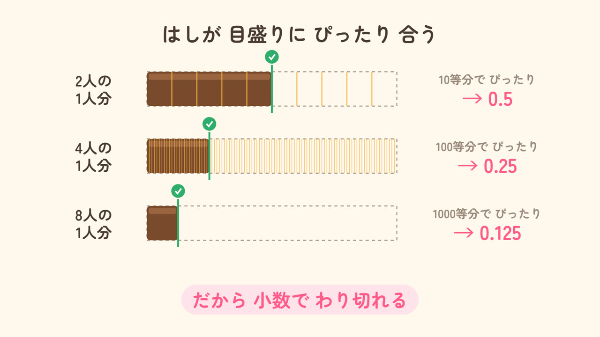
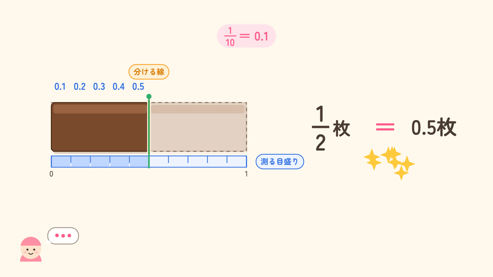
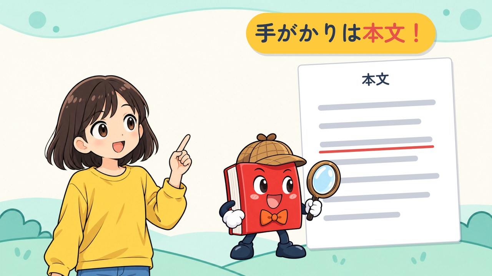

見たい動画をタップしてね

チョコを2人・4人・8人で分けると、1人分は小数でいくつ？ 3人だとどうなる？

半分のチョコは「1/2枚」？「0.5枚」？ 整数・分数・小数のつながりを見てみよう。

主人公の気持ちは、本文の手がかりから。「何が起きた？」「どんな反応？」「なぜ？」で読み取ろう。
小学5年生向けの解説動画のシリーズです。算数は板チョコ1枚を「1」として、国語は本文の手がかりをたどって考えます。台本から映像・声・効果音まで、Claude Code でコードから作りました。各動画のページに、ねらい・場面の一覧・つくり方をのせています。